- Главная
- Статьи
Статьи о детейлинге и защите автомобиля
Мастера студии отвечают на вопросы, которые нам задают на осмотре: что даёт плёнка и керамика, как тонировать по ГОСТ, сколько стоит шумоизоляция и как ухаживать за машиной после работ.
- 24 статей
- 10 рубрик
- обновлено 27 ноября 2026
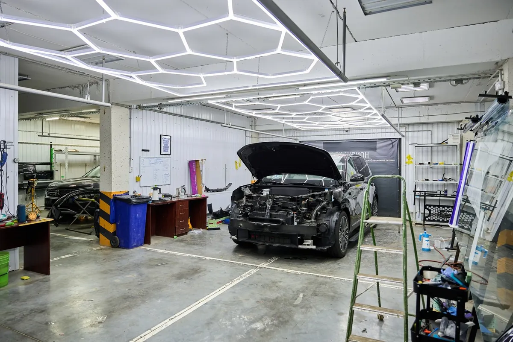
Новое · Детейлинг · разбор Что такое детейлинг автомобиля и что в него входитДетейлинг простыми словами: чем он отличается от мойки, какие работы входят — кузов, салон, стёкла, защита плёнкой — и сколько это стоит в студии.Читать статью →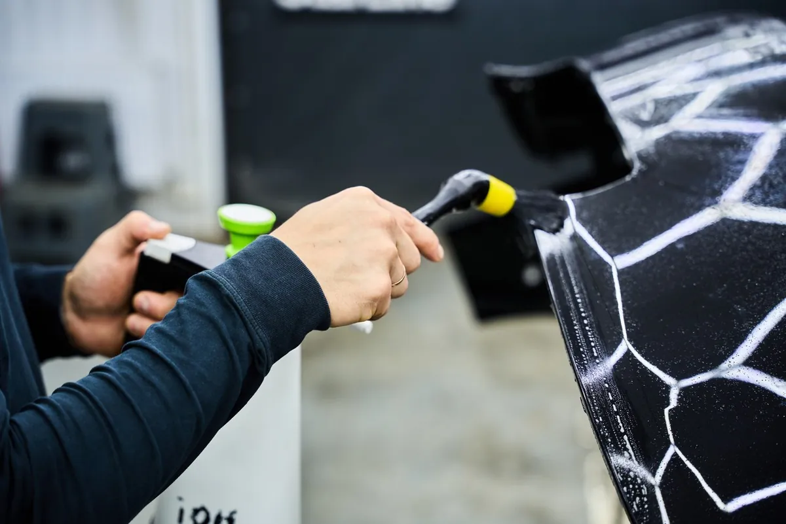
Полировка и керамикаСколько раз можно полировать кузов и почему важна толщина ЛКПСколько раз можно полировать кузов автомобиля, что такое толщина ЛКП и как не «пропилить» лак.24 ноября 2026 · 2 минШумоизоляцияШумоизоляция новой машины и гарантия дилера: что важно знатьМожет ли дилер снять машину с гарантии из-за шумоизоляции, что говорит закон и как сделать работу без рисков.21 ноября 2026 · 2 мин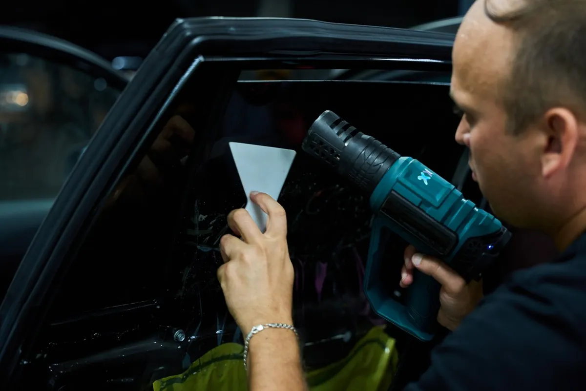
ТонировкаАтермальная плёнка на лобовое стекло: законно ли и спасает ли от жарыЧто такое атермальная плёнка, можно ли клеить её на лобовое и передние стёкла по ГОСТ и насколько она снижает жару в салоне.20 ноября 2026 · 2 мин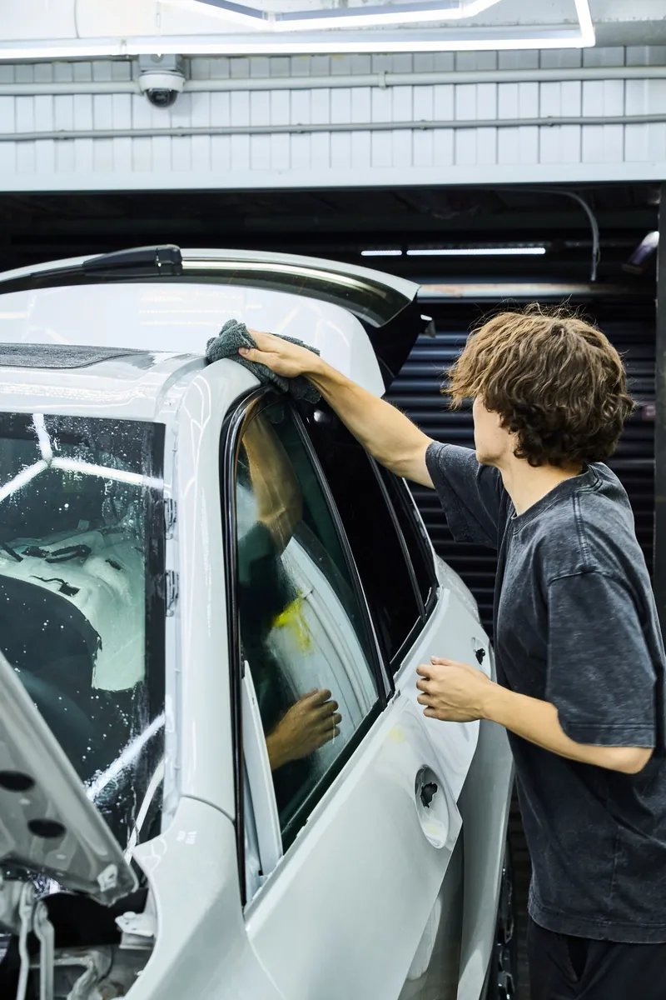
ТонировкаТонировка по ГОСТ: какие стёкла можно затемнятьКакие требования к тонировке действуют в России, какие стёкла можно тонировать любой плёнкой и что такое атермальная плёнка.20 ноября 2026 · 2 минШумоизоляцияШумоизоляция Lada Vesta: какие зоны шумят и что реально даёт обработкаШумоизоляция Lada Vesta в Казани: откуда шум в салоне, какие зоны обработать в первую очередь и сколько это стоит.18 ноября 2026 · 2 мин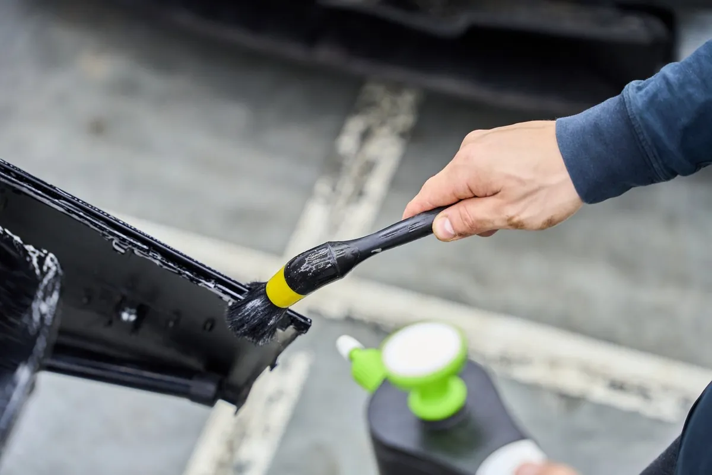
УходУход за машиной в плёнке: мойка, полировка и что делать нельзяКак мыть автомобиль в плёнке PPF или цветной плёнке, когда можно ехать на мойку после оклейки и каких ошибок избегать.15 ноября 2026 · 2 минЦены на работы в Казани
Бронирование плёнкой PPFот 4 000 ₽Оклейка цветной плёнкойот 190 000 ₽Тонировка стёколот 3 000 ₽Тонировка фар и фонарейот 6 000 ₽Бронирование лобового стеклаот 20 000 ₽Шумоизоляцияот 18 000 ₽Полировка кузова и керамикаот 5 000 ₽Полировка фарот 3 000 ₽Bi-LED линзыот 22 000 ₽Антихромот 10 000 ₽Химчистка салонаот 5 000 ₽
ТонировкаПлёнки LLumar ATR, CTX, IRX: какую тонировку выбрать для своей машиныЧем отличаются тонировочные плёнки LLumar ATR, CTX, IRX и AIR 80, какая лучше защищает от жары и не мешает связи.12 ноября 2026 · 2 минСалонСколько стоит химчистка салона и от чего зависит ценаОт чего зависит стоимость химчистки салона: размер машины, материал сидений, загрязнение и объём работ. Как часто делать химчистку и почему салон сохнет по-разному.10 ноября 2026 · 2 мин
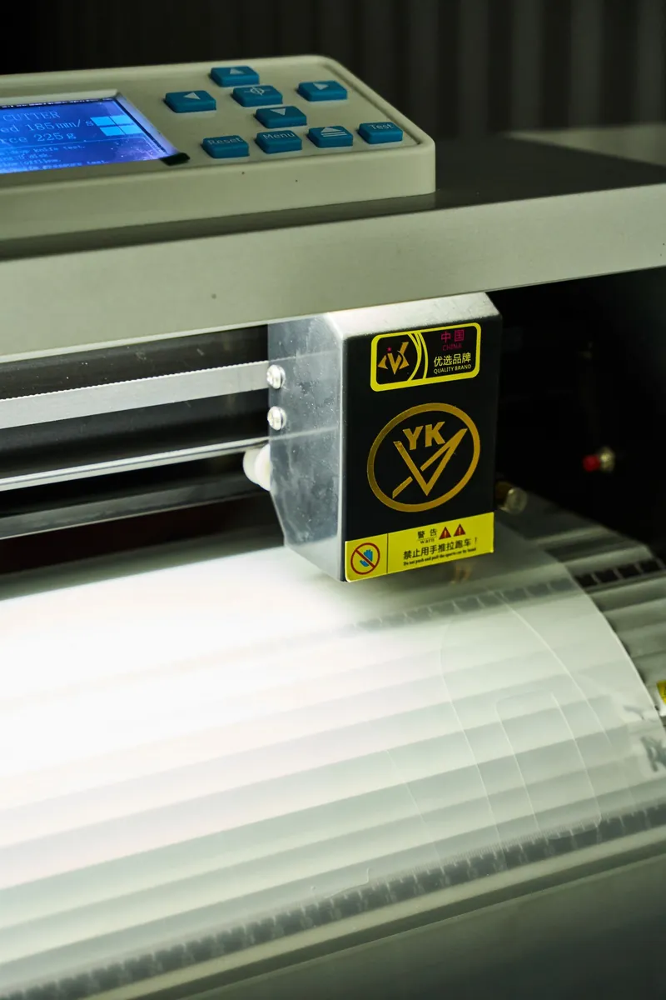
ОклейкаМатовая плёнка на автомобиль: плюсы, минусы и как за ней ухаживатьСтоит ли оклеивать машину матовой плёнкой: как она выглядит, как за ней ухаживать и чем матовая плёнка отличается от сатиновой.9 ноября 2026 · 2 минПолировка и керамикаКак убрать царапины и голограммы с кузова без покраскиКакие царапины можно убрать полировкой, а какие нет, что такое голограммы и как защитить кузов после полировки.6 ноября 2026 · 2 мин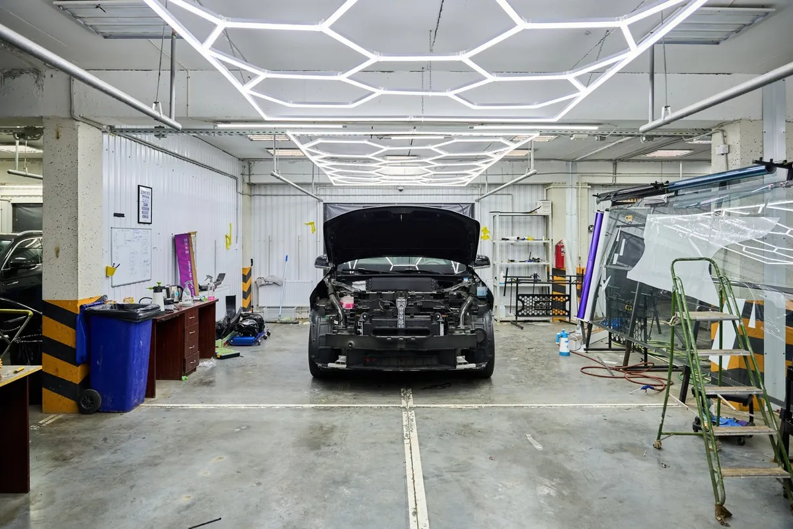
ШумоизоляцияШумоизоляция колёсных арок: снаружи, изнутри или с двух сторонЗачем шумоизолировать колёсные арки, чем отличается обработка снаружи и изнутри и что даёт комплексный подход.3 ноября 2026 · 2 минЗащита кузоваСколько держится плёнка PPF на автомобиле и как продлить ей жизньСрок службы антигравийной плёнки PPF, от чего он зависит, желтеет ли плёнка и как ухаживать за машиной в плёнке.31 октября 2026 · 2 минОклейкаОклейка плёнкой или покраска: что выгоднее для смены цвета автомобиляСравниваем оклейку цветной плёнкой и покраску автомобиля: цена, сроки, защита лака, стоимость машины при продаже.25 октября 2026 · 2 мин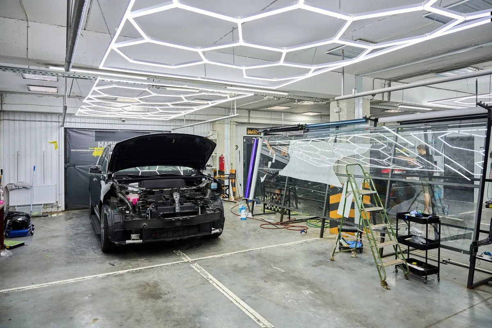
ОклейкаСмена цвета плёнкой и ГИБДД: когда нужно вносить изменения в документыНужно ли регистрировать оклейку автомобиля цветной плёнкой в ГИБДД, что считается сменой цвета и чем рискует владелец.22 октября 2026 · 2 минПолировка и керамикаКерамическое покрытие автомобиля: стоит ли делать и сколько оно держитсяЧто даёт керамика на кузов, сколько она держится, чем отличается от воска и плёнки и сколько стоит в Казани.19 октября 2026 · 2 мин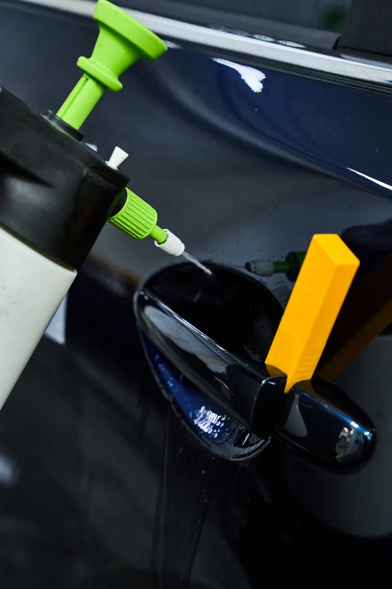
Защита кузоваПлёнка на капот и фары: стоит ли бронировать новую машину и какие зоны защитить первымиСтоит ли клеить антигравийную плёнку на капот, какие зоны страдают от сколов сильнее всего и сколько стоит защита в Казани.16 октября 2026 · 2 минСалонКак убрать запах табака, животных и сырости из салона автомобиляОткуда берётся неприятный запах в машине, почему ароматизатор не помогает и как избавиться от запаха табака, животных и сырости.13 октября 2026 · 2 минСоветыНовая машина из салона: что сделать в первый месяц, чтобы она дольше выглядела новойЧто сделать с новым автомобилем после покупки: защита кузова плёнкой PPF, керамика, тонировка, шумоизоляция. Советы детейлинг-студии из Казани.10 октября 2026 · 2 мин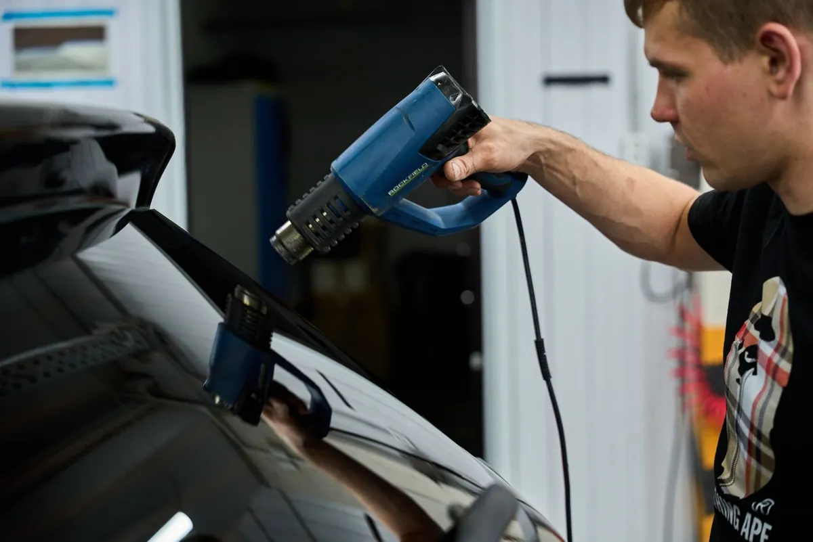
Фары и светПомутнели фары: полировка или замена и как сохранить результатПочему мутнеют пластиковые фары, когда помогает полировка, а когда нужна замена, и как защитить фары плёнкой. Цены в Казани.7 октября 2026 · 2 мин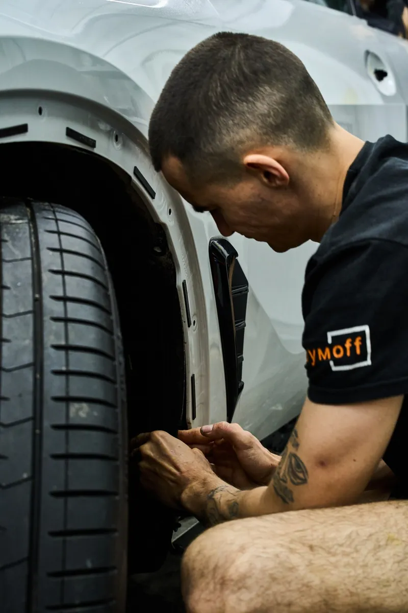
ШумоизоляцияСколько стоит шумоизоляция автомобиля в Казани: цены по зонамЦены на шумоизоляцию авто в Казани: двери, пол, арки, крыша, багажник, капот и торпедо. Сколько стоит салон под ключ и от чего зависит цена.1 октября 2026 · 2 мин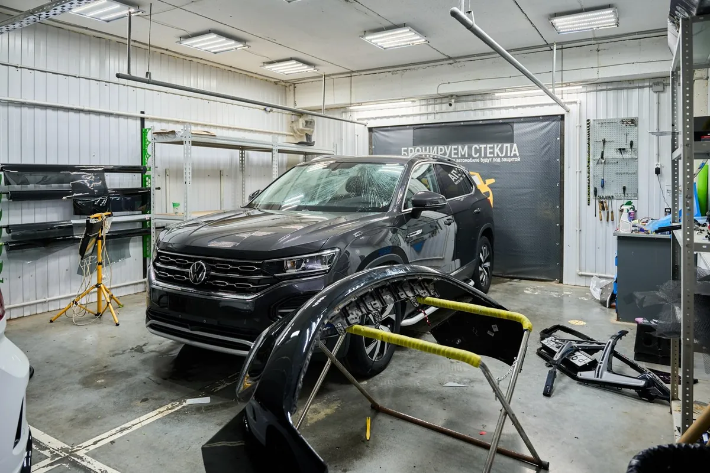
Защита кузоваPPF или керамика: что выбрать для новой машиныЧем антигравийная плёнка PPF отличается от керамики, от чего защищает каждое покрытие и когда их стоит сочетать.30 сентября 2026 · 2 минШумоизоляцияШумоизоляция автомобиля: с чего начать и какие зоны дают больше эффектаКакие зоны шумоизолировать в первую очередь, за какой шум отвечают двери, пол, арки и крыша, и сколько это стоит в Казани.30 сентября 2026 · 2 мин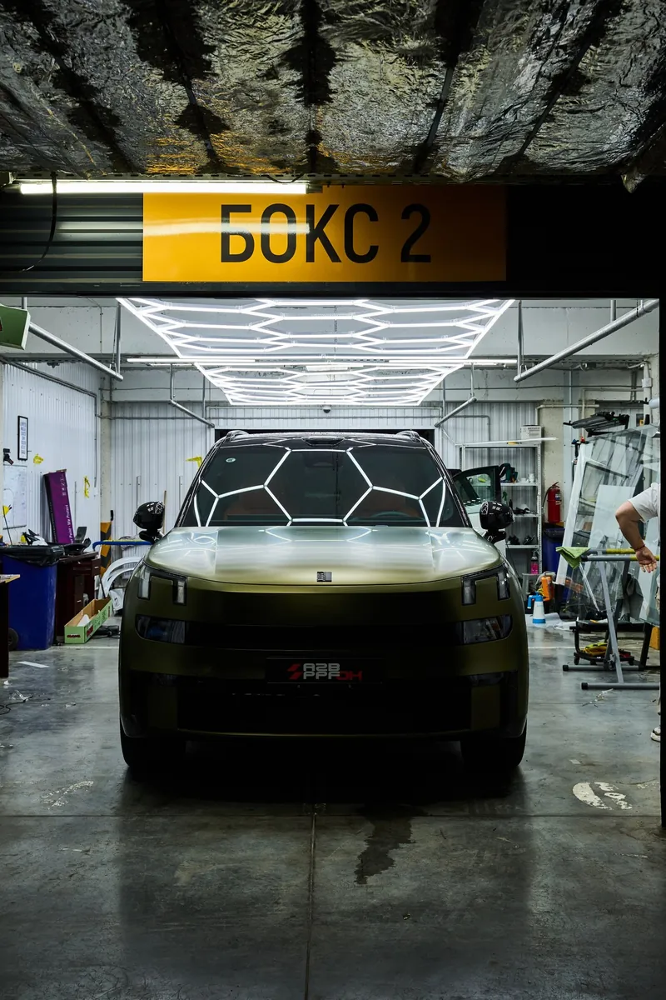
ОклейкаСколько стоит оклейка авто плёнкой в Казани в 2026 годуЦены на оклейку автомобиля в Казани: полная оклейка, зоны риска, цветная плёнка, шумоизоляция. От чего зависит стоимость и как сэкономить.30 сентября 2026 · 2 минНичего не нашли. Спросите мастера в Telegram — ответим.
Не нашли ответ?
Спросите мастера напрямую
Пришлите марку машины и вопрос — подскажем, что действительно нужно, и назовём цену до начала работ.
- 3000+ автомобилей прошли через студию
- 5,0 рейтинг на Авито
- от 5 лет опыт мастеров
- 0 ₽ предоплаты — оплата по готовности